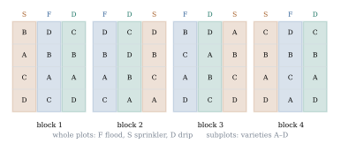

33.1 Split-plot designs
Some treatments cannot be applied to small units: an irrigation rig waters a strip of field, not a square metre of it; a teaching method is delivered to a class, not to a pupil. An experiment combining such a treatment with one applied as finely as one likes gives the coarse treatment to large units and the fine treatment to subdivisions of them — a split-plot design, named after the field trials it came from. Two independent randomizations mean two error terms, so that an analysis ignoring the distinction gets both wrong, in opposite directions.
33.1.1. The design and its randomization
Take

Two things vary from subplot to subplot: whatever
makes whole plots differ, shared by all
Index blocks by
where
The whole plot
where
Where does the equicorrelation come from? In a randomized experiment, random assignment plus unit–treatment additivity produces the model rather than assuming it (Section 15.1), and here the argument runs twice: the second randomization is performed anew in every whole plot, making the subplots of a whole plot exchangeable — exactly the covariance Eq. 33.1.2. When the subplot factor is not randomized, as it is not when that factor is time (Section 33.3), the justification disappears and with it the equicorrelation.
33.1.2. Two strata
Order the observations with
and
Let
(a)
(b) The six matrices of Eq. 33.1.3 together with
(c)
Proof.
(a) The whole plot
(b) Ranks, symmetry and idempotence are Lemma 16.1.1(b), noting
(c) A product
Part (c) is the whole idea. The whole-plot
stratum
Idea. A split-plot design is two
experiments sharing one field: a whole-plot experiment
with
33.1.3. The analysis
Assume Eq. 33.1.1
with
(a)
(b) The sums of squares are those of the balanced three-way layout, with
(c) The expected mean squares (Theorem 9.6.1) are
(33.1.4)where
(d) Under normality the six sums of squares are independent,
(e) A contrast
(f) Fix a subplot treatment
which belongs to neither stratum: no single mean square estimates it, and the unbiased estimate is the combination
Proof.
(a) Every
(b) Each projection averages over the slots carrying
(c) Each
(d) Write
(e) The coefficient vector of
(f) Split
Dropping
Part (f) is the case most often got wrong. “The
interaction is tested against
approximate degrees of freedom, which lie between the two exact values.
Four fields are each divided into three whole plots,
and the regimes flood, sprinkler and drip are assigned
at random within each field; each whole plot is divided
into four subplots carrying four barley varieties in
random order, giving
| Source | df | SS | MS | ||
|---|---|---|---|---|---|
| blocks | 3 | 9.471 | 3.157 | ||
| irrigation |
2 | 9.215 | 4.608 | 10.637 | 0.0106 |
| whole-plot error | 6 | 2.599 | 0.433 | ||
| variety |
3 | 1.755 | 0.585 | 9.442 | 0.0002 |
| irrigation × variety | 6 | 0.958 | 0.160 | 2.577 | 0.0419 |
| subplot error | 27 | 1.673 | 0.062 |
The two error mean squares differ by a factor of
seven. Solving Eq. 33.1.4
gives
The irrigation means are
import numpy as np
r, a, b = 4, 3, 4 # blocks, irrigation regimes, varieties
n = r * a * b
block_eff = np.array([-0.30, 0.10, 0.05, 0.15]) # field-to-field fertility
irrig_eff = np.array([0.00, 0.45, 0.70]) # flood, sprinkler, drip
variety_eff = np.array([-0.30, -0.10, 0.15, 0.25])
inter = np.array([[0.10, -0.05, -0.10, 0.05], # irrigation x variety
[-0.05, 0.10, 0.00, -0.05],
[-0.05, -0.05, 0.10, 0.00]])
sigma_w, sigma_s = 0.35, 0.25 # whole-plot and subplot errors
rng = np.random.default_rng(3301)
eta = rng.normal(0, sigma_w, (r, a)) # one error per whole plot
e = rng.normal(0, sigma_s, (r, a, b)) # one error per subplot
mean = (5.0 + block_eff[:, None, None] + irrig_eff[None, :, None]
+ variety_eff[None, None, :] + inter[None, :, :])
Y = np.round(mean + eta[:, :, None] + e, 2) # yields, t/ha
y = Y.reshape(-1) # stacked block, then regime, then varietyThe analysis is seven inner products, each projection a Kronecker product as in Section 16.3, with two denominators in place of one.
from scipy import stats
def Jbar(k):
return np.full((k, k), 1.0 / k)
def Cen(k):
return np.eye(k) - Jbar(k)
def kron3(E1, E2, E3):
return np.kron(np.kron(E1, E2), E3)
P = {"blocks": kron3(Cen(r), Jbar(a), Jbar(b)),
"irrigation": kron3(Jbar(r), Cen(a), Jbar(b)),
"whole-plot error": kron3(Cen(r), Cen(a), Jbar(b)),
"varieties": kron3(Jbar(r), Jbar(a), Cen(b)),
"irrigation x variety": kron3(Jbar(r), Cen(a), Cen(b)),
"subplot error": kron3(Cen(r), np.eye(a), Cen(b))}
df = {k: int(round(np.trace(M))) for k, M in P.items()}
SS = {k: y @ M @ y for k, M in P.items()}
MS = {k: SS[k] / df[k] for k in P}
F_irrigation = MS["irrigation"] / MS["whole-plot error"]
F_variety = MS["varieties"] / MS["subplot error"]
F_inter = MS["irrigation x variety"] / MS["subplot error"]
for name, F, d in [("irrigation", F_irrigation, df["whole-plot error"]),
("varieties", F_variety, df["subplot error"]),
("irrigation x variety", F_inter, df["subplot error"])]:
p = stats.f.sf(F, df[name], d)
print(f"{name:22s} F({df[name]},{d}) = {F:7.3f} p = {p:.4f}")33.1.4. What pooling costs
Pool the two error sums of squares into one residual
mean square on
Warning. The two error terms are a property of the randomization, not of the data. A split-plot experiment analysed as a completely randomized three-factor experiment produces a plausible table with one residual line, and nothing in the numbers announces the mistake. Wherever one factor is applied to groups of units and another within them, look for two errors.
33.1.5. The same analysis as a mixed model
Eq. 33.1.1
is a linear mixed model (Definition 32.2.1)
with
The route earns its keep when the balance fails: a
missing subplot, a whole plot lost to flooding, a
covariate measured at the subplot level. The strata are
then no longer orthogonal, no mean square estimates
33.1.6. Exercises
A. Check your understanding
For the design of Example (An irrigation and variety trial), say which stratum each of the following belongs to, and on how many degrees of freedom its error is estimated: the difference between two block means; between two variety means; between two irrigation means; between two varieties within the drip regime; the difference in the effect of drip versus flood between two varieties; and the difference between drip and flood for the first variety alone.
Solution. The block and irrigation
differences are constant within whole plots, so they lie
in the whole-plot stratum and use
With
B. Practice
Verify Theorem 33.1.2(a)
directly from Theorem 6.9.3 by
computing
Show that for the balanced split-plot model the
restricted likelihood of
Solution. The error contrasts are
the
C. Going deeper
A split-split-plot design divides each subplot into